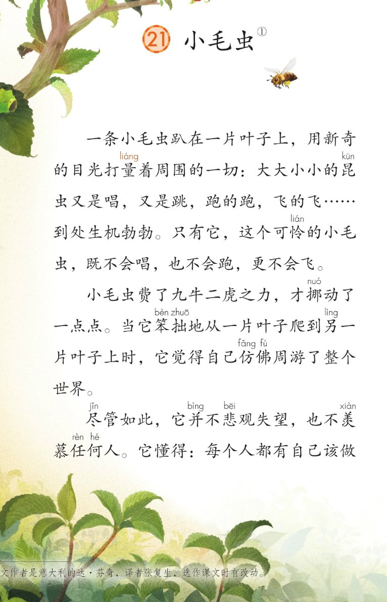
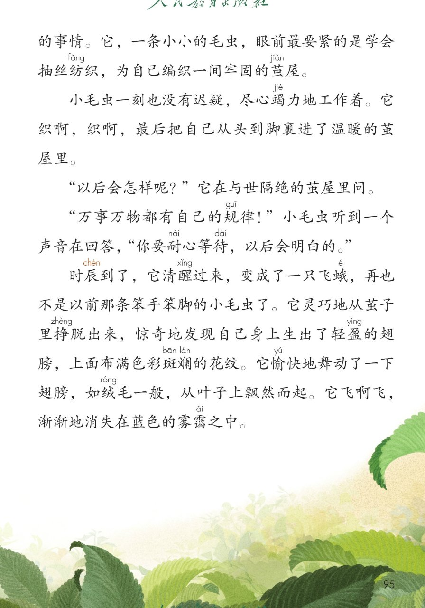
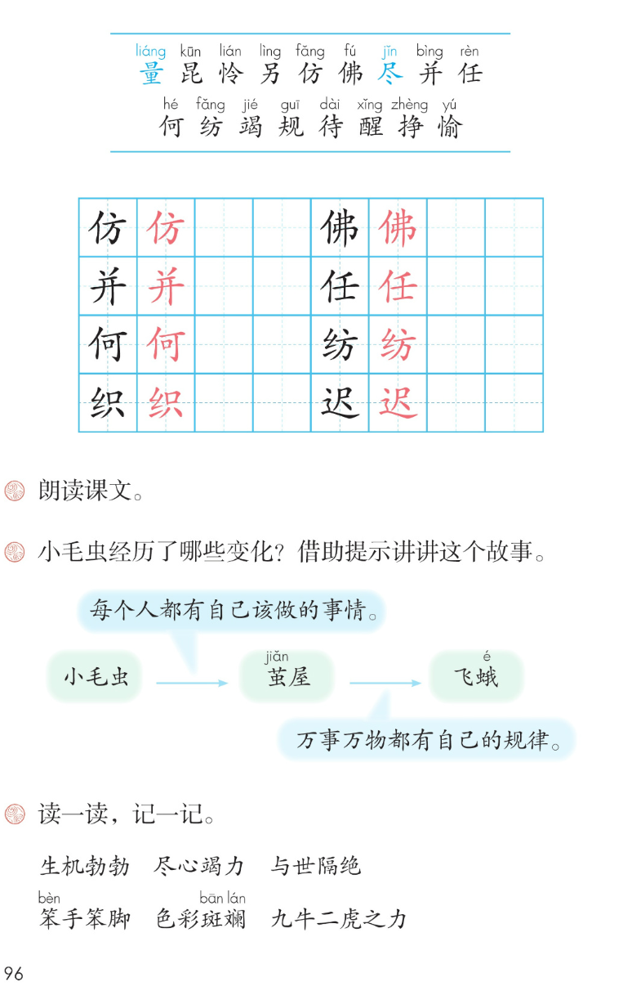

×
🔊 手机听不到声音怎么办？
① 先把手机
媒体音量调大 ，确认没开静音、没连蓝牙耳机；在微信里打开的，点右上角「⋯ → 用浏览器打开」。
② 还是没声音？到应用商店免费下载
Microsoft Edge 浏览器 （它自带朗读发声），用它打开本页面就能出声。
③ 换了 Edge 仍然没声音，说明这部手机的
硬件/系统不支持 网页朗读（多为老旧机型）；近几年买的新手机一般都能正常播放。
→ 打开声音自检
🐛 第 21 课《小毛虫》· 有声图文带读
统编版语文 · 第七单元·阅读 · 课本 第 94~96 页 · 作者：达·芬奇（意大利）
课文 7 段 · 共 15 句
会认字 17
会写字 8
听写词 10
近义词 4 组
深入理解 8 题
本课本领 朗读·借助提示讲故事
🎧 五步学（可随时点任意一句、一个字、一个词单独听）： ① 听读课文 ——七段课文，一句一句读，读到哪一句哪一句发光；开「跟读」后读完一句留时间让你自己读。② 学字词 ——17 个会认字、8 个会写字（含书写提示），点一个读一个。③ 词语·听写·造句 ——先读课文词语积累，再听写 10 个词（读两遍→你写→报答案→听示范句），最后听 4 组近义词辨析。④ 深入理解 ——8 道题（认知 / 理解 / 运用 / 拓展），开放题答案不唯一，先想后看。⑤ 分节朗读·想象画面 ——按五步想象小毛虫的变化，再听七位朗读者分段读这篇课文。
📚 第七单元·阅读（本课定位）： 第18课《大象的耳朵》 → 第19课《蜘蛛开店》 → 第20课《青蛙卖泥塘》 → 第21课《小毛虫》 → 语文园地七
点段前的 ①②③④⑤⑥⑦ 听整段
🔁 跟读模式：关
👁 隐藏注音（自测用）
注音只标本课要认、要写的字和课本明确标了音的字，读音来自课本第 96 页生字表
🎤 朗读要求（老师标准） 量 在打量里读第二声，昆 读第一声，怜 读第二声，另 读第四声，仿 读第三声，佛 在仿佛里读第二声，尽 在尽管里读第三声、在尽心竭力里读第四声，并 读第四声，任 读第四声，何 读第二声，纺 读第三声，竭 读第二声，规 读第一声，待 读第四声，醒 读第三声，挣 在挣脱里读第四声，愉 读第二声；挪 读第二声，拙 读第一声，茧 读第三声，霭 读第三声；不添字、不漏字 ：逗号停得短，句号停得长，一句一句读清楚；读出变化 ：前两段读出小毛虫的可怜和笨拙，中间几段读得坚定认真，最后一段读得轻快惊喜；问句句尾上扬 （以后会怎样呢），感叹句读得有力量（万事万物都有自己的规律）。
①
一条小毛虫趴在一片叶子上，用新奇的目光打量liáng 着周围的一切：大大小小的昆kūn 虫又是唱，又是跳，跑的跑，飞的飞……到处生机勃勃。
只有它，这个可怜lián 的小毛虫，既不会唱，也不会跑，更不会飞。
②
小毛虫费了九牛二虎之力，才挪nuó 动了一点点。
当它笨bèn 拙zhuō 地从一片叶子爬到另lìng 一片叶子上时，它觉得自己仿fǎng 佛fú 周游了整个世界。
③
尽jǐn 管如此，它并bìng 不悲bēi 观失望，也不羡xiàn 慕任rèn 何hé 人。它懂得：每个人都有自己该做的事情。
它，一条小小的毛虫，眼前最要紧的是学会抽丝纺fǎng 织，为自己编织一间牢固的茧jiǎn 屋。
④
小毛虫一刻也没有迟疑，尽jǐn 心竭jié 力地工作着。
它织啊，织啊，最后把自己从头到脚裹进了温暖的茧jiǎn 屋里。
⑤
“以后会怎样呢？”它在与世隔绝的茧jiǎn 屋里问。
⑥
“万事万物都有自己的规guī 律！”小毛虫听到一个声音在回答，“你要耐nài 心等待dài ，以后会明白的。”
⑦
时辰chén 到了，它清醒xǐng 过来，变成了一只飞蛾，再也不是以前那条笨bèn 手笨bèn 脚的小毛虫了。
它灵巧地从茧jiǎn 子里挣zhèng 脱出来，惊奇地发现自己身上生出了轻盈yíng 的翅膀，上面布满色彩斑bān 斓lán 的花纹。
它愉yú 快地舞动了一下翅膀，如绒róng 毛一般，从叶子上飘然而起。
它飞啊飞，渐渐地消失在蓝色的雾霭ǎi 之中。
🤔 想一想（点我可跳过）
点一张图，听读整页

第 94 页 · 课题·第 1~3 段

第 95 页 · 第 3~7 段

第 96 页 · 生字表·课后题
📖 人教版《语文》二年级下册 · 课本第 94~96 页 · 图片仅供个人学习，版权归人民教育出版社所有
点一个字，听读音、词语和课文里的句子
结构、部首、笔画与书写提示为通用规范，供参考，以教材和老师的指导为准
仿
fǎng
模仿 · 仿佛
6 画 · 左右（亻）
左窄右宽，方的撇要舒展
佛
fú
仿佛 · 佛手
7 画 · 左右（亻）
左窄右宽，弗的两竖写正
并
bìng
并且 · 合并
6 画 · 上下（丷）
点撇对称，撇竖舒展
任
rèn
任何 · 任务
6 画 · 左右（亻）
左窄右宽，壬的横画均匀
何
hé
如何 · 任何
7 画 · 左右（亻）
左窄右宽，可的竖钩有力
纺
fǎng
纺织 · 纺线
7 画 · 左右（纟）
左窄右宽，方的折钩写稳
织
zhī
编织 · 织布
8 画 · 左右（纟）
左窄右宽，只的撇点对称
迟
chí
迟到 · 迟疑
7 画 · 半包围（辶）
尺在辶里居中，捺要写长
点一行，听词语和课后题的答案
📖 课后题（课本第 96 页照录） ：① 朗读课文。小毛虫经历了哪些变化？借助提示讲讲这个故事（提示：小毛虫 → 茧屋 → 飞蛾）。 ② 读一读，记一记（生机勃勃 / 尽心竭力 / 与世隔绝 / 笨手笨脚 / 色彩斑斓 / 九牛二虎之力）。
打量 打量 观察
挪动 挪动 移动
笨拙 笨拙 笨手笨脚
羡慕 羡慕 仰慕
读两遍 → 你在纸上写 → 报答案 → 听示范句
准备听写 · 共 10 个词
○ ○ ○
点下面的「开始听写」，听到一个词就写一个词。
▶ 开始听写
🔁 再读一遍
👁 看答案
点词听读，点句子听示范句，再自己说一句
1 仿佛 会写字 · 仿 佛
示范句：它觉得自己仿佛周游了整个世界。
✏️ 我也能说：什么仿佛什么
2 并且 会写字 · 并
示范句：我会扫地，并且扫得很干净。
✏️ 我也能说：会什么并且怎么样
3 任何 会写字 · 任 何
示范句：它并不悲观失望，也不羡慕任何人。
✏️ 我也能说：任何什么
4 纺织 会写字 · 纺 织
示范句：眼前最要紧的是学会抽丝纺织。
✏️ 我也能说：谁在纺织什么
5 迟到 会写字 · 迟
示范句：今天下雨，我也没有迟到。
✏️ 我也能说：谁迟到
6 昆虫 课文词 · 昆
示范句：大大小小的昆虫又是唱，又是跳。
✏️ 我也能说：什么昆虫
7 可怜 课文词 · 怜
示范句：只有它，这个可怜的小毛虫。
✏️ 我也能说：谁很可怜
8 竭力 课文词 · 竭
示范句：小毛虫一刻也没有迟疑，尽心竭力地工作着。
✏️ 我也能说：谁竭力做什么
9 等待 课文词 · 待
示范句：你要耐心等待，以后会明白的。
✏️ 我也能说：谁在等待什么
10 愉快 课文词 · 愉
示范句：它愉快地舞动了一下翅膀。
✏️ 我也能说：谁愉快地做什么
相同点 / 不一样在哪 / 各造一句
仿佛 — 好像
相同：都表示像、好似 。
不一样：仿佛 多用在书面上；好像 说话写话都常用。
仿佛：它觉得自己仿佛周游了整个世界。
迟疑 — 犹豫
相同：都表示拿不定主意、不马上行动 。
不一样：迟疑 强调行动上慢了、停了；犹豫 强调心里反复想。
迟疑：小毛虫一刻也没有迟疑。
灵巧 — 灵活
相同：都表示动作快而巧 。
不一样：灵巧 多写手和动作精巧；灵活 还能用在办法、脑筋上。
灵巧：它灵巧地从茧子里挣脱出来。
愉快 — 快乐
相同：都表示心里高兴 。
不一样：愉快 多形容心情、气氛；快乐 用得更广，也常当祝福的话。
愉快：它愉快地舞动了一下翅膀。
生机勃勃（生命力旺盛） 大大小小的昆虫又是唱，又是跳，到处生机勃勃
尽心竭力（用尽全部力气） 小毛虫一刻也没有迟疑，尽心竭力地工作着
与世隔绝（和外面断了联系） 它在与世隔绝的茧屋里问
色彩斑斓（颜色又多又好看） 翅膀上布满色彩斑斓的花纹
标「答案不唯一」的题，说得有道理都对
认知 小毛虫经历了哪些变化？借助提示讲讲这个故事。看解析
🤔 想一想
解析：
不会唱，不会跑，更不会飞
抽丝纺织，裹进茧屋
挣脱茧子，飘然而起
认知 开始的小毛虫是什么样子的？看解析
🤔 想一想
解析：
既不会唱，也不会跑，更不会飞
九牛二虎之力、笨拙
可怜又笨拙
理解 小毛虫为什么不悲观失望，也不羡慕任何人？看解析
🤔 想一想
解析：
每个人都有自己该做的事情
抽丝纺织，编织茧屋
专心做自己该做的事
理解 万事万物都有自己的规律，这句话是什么意思？看解析
🤔 想一想
解析：
事物自己的顺序和道理
耐心等待，时辰到了
不着急，等时候到
理解 变成飞蛾后，它和以前有什么不一样？看解析
🤔 想一想
解析：
笨手笨脚，挪动一点点
灵巧、轻盈、色彩斑斓
从笨拙变成了灵巧
运用 用 既不……也不……更不…… 说一句话。看解析
🤔 想一想
解析：
既不做什么，也不做什么，更不做什么
在家、在教室的事都可以
🌈 答案不唯一，说得有道理都对
运用 用 仿佛 说一句话。看解析
🤔 想一想
解析：
什么仿佛什么，就是好像
云、月亮、雪景都可以
🌈 答案不唯一，说得有道理都对
拓展 小毛虫的故事让你明白了什么？看解析
🤔 想一想
解析：
做好自己的事，不羡慕别人
学本领要坚持、有耐心
🌈 答案不唯一，说得有道理都对
点一步，听这一步
1
趴在叶子上
💬 想象支架：先 想趴在叶子上的小毛虫 → 再 想它笨拙地爬 → 接着 想它织茧裹住自己 → 然后 想在茧屋里耐心等待 → 最后 想它变成飞蛾飞进雾霭。
点一张卡，听这一节的句子
🌈 第1节·朗读者
第1节：一条小毛虫趴在一片叶子上，用新奇的目光打量着周围的一切：大大小小的昆虫又是唱，又是跳，跑的跑，飞的飞，到处生机勃勃。
💬 开头一段，读出昆虫们的热闹和小毛虫的可怜
🌈 第2节·朗读者
第2节：小毛虫费了九牛二虎之力，才挪动了一点点。
💬 笨拙一段，读得慢慢、费劲
🌈 第3节·朗读者
第3节：尽管如此，它并不悲观失望，也不羡慕任何人。
💬 懂事一段，读得坚定、不慌
🌈 第4节·朗读者
第4节：小毛虫一刻也没有迟疑，尽心竭力地工作着。
💬 织茧一段，读得认真、连续
🌈 第5节·朗读者
第5节：以后会怎样呢？它在与世隔绝的茧屋里问。
💬 发问一句，读出好奇，句尾上扬
🌈 第6节·朗读者
第6节：万事万物都有自己的规律！小毛虫听到一个声音在回答，你要耐心等待，以后会明白的。
💬 回答一句，读得沉稳、有力量
🌈 第7节·朗读者
第7节：时辰到了，它清醒过来，变成了一只飞蛾，再也不是以前那条笨手笨脚的小毛虫了。
💬 变化一段，读得轻快、惊喜